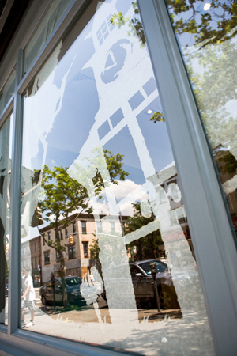
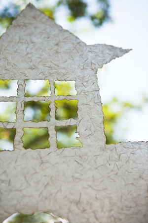
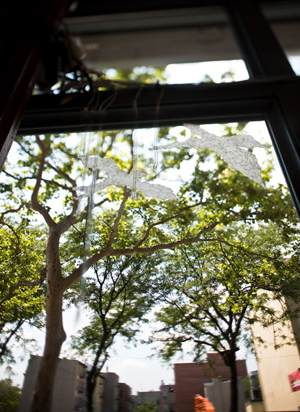
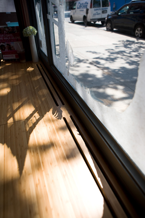
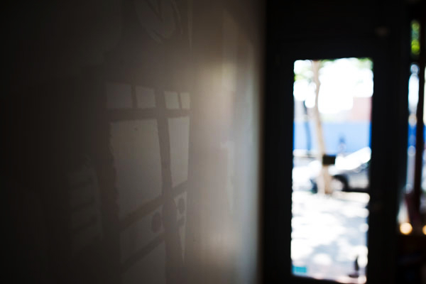
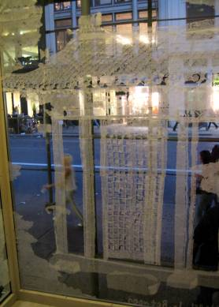
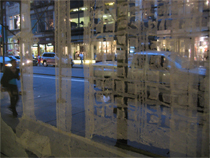
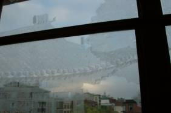
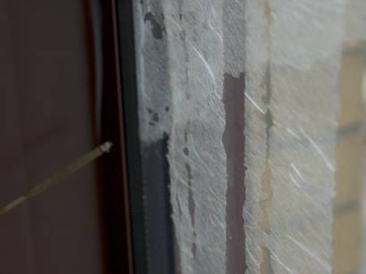

2008 Jul, Alive, Site Specific Interactive Installation(331 Court St, Brooklyn, NY) / 2005 August, Korea+New York, Site Specific Installation(555 Broadway St. NYC) / 2005 May, Korea+Providence, Site Specific Installation(2 College St, Providence, RI)
  
  Alive(2008) is a site specific work in the window of Massage shop, Brooklyn. Through the window, people could appreciate the fake view in the real outside view. Also there are several LEDs turning on at night with light sensor like stars. I hope people could find the unexpected sight in the window and enjoy the real and fake scenes in the same view.
Korea+New York(2005)
  Korea+New York(2005) has been installed in a street-level window in downtown Manhattan. By using the image of a traditional Korean abode, which I overlay atop the background of urban space, I create a new space, one that is stretched between two nations. In many ways,Korea+New York(2005)does not actually occupy physical space , which is reflected in the materials I have chosen. Windows are meant to be as intangible as possible; they are built so that one can see through from the inside to the outside and vice versa. The rice paper is more opaque than the glass of the window, but it is still fairly transparent, especially when light shines through it. The combination of two materials creates a diaphanous situation; I may have created a new space, but it is much more of a suspended and metaphorical space, much like memory.
I bring my own memories into my installation Korea+New York(2005). In the piece, I use incense to burn parts of large pieces of rice paper. The rice paper is then installed into a window pane and depicts the image of a traditional Korean home and its accompanying gate. Each of the elements I have chosen for In-Between link me back to my homeland. The use of rice paper, for example, has a rich history in Korea; in the past and in some traditional households, rice paper is utilized to cover the grids of wooden doors. Despite being a fairly weak material, overlapping rice paper into multiple layers enhances its strength. Furthermore, rice paper's translucency makes it a particularly attractive alternative to glass. Human's memory overlap with layers and weathers away over time. It goes same with nostalgia. My reminiscence and memory about Korea leaves farther away as the rice paper becomes opaque as attached to the glass window and becomes less clear and the longing deepens as the paper's color overlaps against each other. Also, rice paper is easily torn and ethereal . This is the reason for using rice paper Korea+New York(2005) since reminiscence and memory resemble the character of the fabric. My choice to use incense is also significant; burning paper is a common practice in Korea. Incense is used for religious ceremonies and for meditation purposes. Using incense to 'draw' onto the rice paper is incredibly time-consuming, much more so than if I had used pen or pencil or cut out with scissors or a razor. The process, however, is important to me; it is a contemplative one that allows me to consider my life and my surroundings. The incense also burns the rice paper, leaving charred edges around every shape; the effect is haunting and the charring provides a contrast between the translucence of the rice paper and the transparence of the glass window pane.
Exhibition
2005 Aug, Art Student Show in NY, ISE Cultural Gallery, NYC (curator. Melissa Chiu as Museum Director of the Asia Society, Benjamin Genocchio as Art Critic of New York Times, Mariko Mori, Artist)
Korea+Providence(2005)
 
Korea+Providence(2005) has been installed in the fourth floor window of an academic building at the Rhode Island School of Design.